Thermodynamic
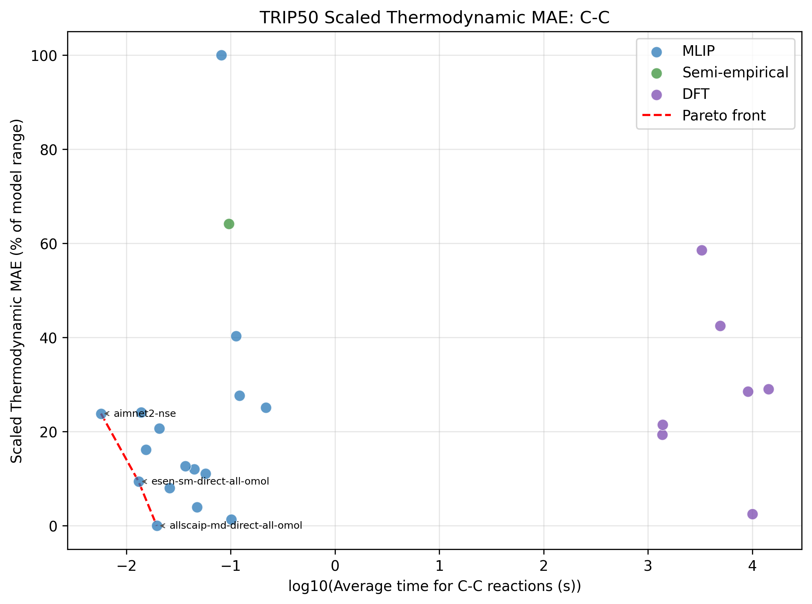
This project serves to evaluate the accuracy and efficiency of several semi-empirical and Machine Learning Interatomic Potential (MLIP) models when predicting reaction energies on triplet-state reaction thermochemistry using the TRIP50 benchmark dataset.
Recent developments in triplet-state organic chemistry have increased the need for accurate computational methods for describing reaction energies. Due to their short lifetime, mechanistic studies on open-shell triplet species rely highly on computation. In the original TRIP-50 study, benchmarking was established using a variety of density functional theory (DFT) methods.[1] A test set of 50 organic reactions was used to compute barrier heights and thermodynamic values using 45 functionals. It was found that range-separated hybrid functionals outperformed non-range-separated versions, and the best-performing single hybrid functionals were ωM06-D3, ωB97M-V, M06-2X-D3, and M05-2X-D3 for a balance of high accuracy and computational efficiency. [2][3][4][5]
While DFT methods provide accurate prediction, their computation expense limits their application to large-scale and high-throughput studies. In this project, I'm expanding on the original TRIP50 benchmarking by evaluating the performance of a variety of semi-empirical and MLIP models. To begin, I selected the highest performing from each category of functional as tested in the original benchmarking. Then, I benchmarked using the models listed in the "models tested" section.
The TRIP50 dataset was developed in Hughes et al. to create a diverse set of chemical reactions that proceed through at least one triplet transition state.[1] Reactions include transformations involving forming/breaking different bonds, along with H-atom transfer reactions. This results in 7 distinct categories of reactions (C-C, C-O, C-S, C-Hal, Si-X, N-X, HAT). Hughes writes about the types of reactions present in the dataset:
In total, this data set represents a diverse set of chemical reactions relevant to various fields of chemistry. This includes reactions relevant for medicinal and synthetic chemists, such as the Zimmerman di-π-methane rearrangement (1, 2), Norrish Type I and II reactions (10, 11, 23, 24), stepwise [2 + 2] cycloadditions (3–7, 9, 13–17, 42), with a subset of those being Paterno-Büchi reactions, Shultz-type 6π heterocyclizations (9), and reactions resulting in the evolution of molecular nitrogen from azo and diazo compounds that yield reactive carbon-centered radicals and triplet carbenes (43–49). A subset of the HAT and C–S reactions contain triplet sulfur dioxide and atomic sulfur, respectively (18, 19, 27–30). These species are common air pollutants whose triplet reactions are of relevance to atmospheric chemistry. Other reactions in the data set are relevant for catalysis (8), as well as biological (42) and materials (20) chemistry. (Hughes, 2026, p.3)
Set of 50 representative triplet state reactions over seven categories: C−C, C−O, C−S, HAT, Si−X, C−Hal, and N−X.
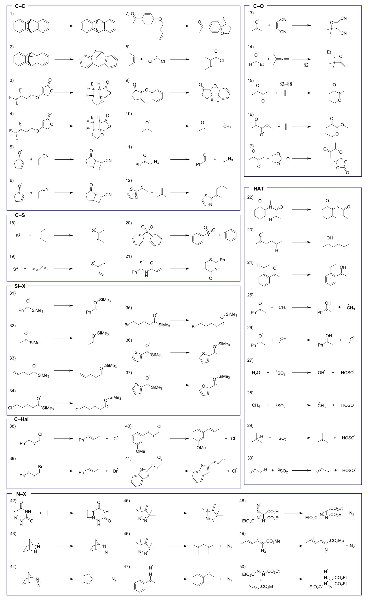
DLPNO-CCSD(T)/CBS
Used as the reference for all reported errors.
7 methods
All using def2-QZVPP basis set
1 method
16 methods
In Hughes, geometry optimizations and vibrational frequency calculations were performed in Gaussian 16 software using ωB97X-D[6]/def2-TZVP[7] level of theory. Conformational sampling was performed using a combination of RDKit and manual conformational sampling.
As a comparison, the highest performing functional from the classes spanning GGA, meta-GGA, hybrid GGA, hybrid meta-GGA, range-separated hybrid, and double hybrid classes were selected. Single point energy corrections were performed using the def2-QZVPP basis set.[7] As in Hughes, reference values were computed using DLPNO-CCSD(T)[8][9][10][11][12][13] (domain-based local pair natural orbital coupled cluster with singles, doubles, and perturbative triples).
A selection of semi-emprical methods were selected to represent neglect of diatomic differential overlap (NDDO) and extended tight-binding (xTB) methods. These were performed in ORCA 6.1.1, g-xTB, and openMOPAC (see Computational Models).
MLIP models were selected if they were molecular models that accepted spin, multiplicity, or magnetic moment as an input parameter. DFT calculations used the ORCA program system.[14][15]
For values reported as mean absolute error (MAE) over several reactions, values were calculated according to
$$\text{MAE} = \frac{1}{n}\displaystyle\sum^n_{i=1}|\Delta E_{\text{Calculated}}-\Delta E_{\text{Reference}}|$$
where $n$ is the number of reactions over which the average is being taken, $\Delta E_{\text{Calculated}}$ is the thermochemical value for either barrier height or reaction energy, and $\Delta E_{\text{Reference}}$ is the reference value for that reaction.
For kinetic values reported, forward and reverse barrier heights were calculated according to
$$\Delta E_{\text{FBH}} = \displaystyle\sum E_{\text{Reactants}} = E_{\text{TS}}$$
$$\Delta E_{\text{RBH}} = \displaystyle\sum E_{\text{Products}} = E_{\text{TS}}.$$
Errors in kinetics were calculated as the average of absolute errors in forward and reverse barrier heights, as
$$\text{Error}=\frac{|\Delta E_{\text{FBH}_{\text{Calculated}}}-\Delta E_{\text{FBH}_{\text{Reference}}}|+|\Delta E_{\text{RBH}_{\text{Calculated}}}-\Delta E_{\text{RBH}_{\text{Reference}}}|}{2}.$$
The table loads directly from data/final/final_data_table.csv and is sorted by combined MAE.
Loading final benchmark data…
| Model | Category | Average time (s) | Thermo MAE | Kinetic MAE | Combined MAE |
|---|
An accuracy-weighted efficiency score is useful for comparing models whose runtimes span several orders of magnitude. Times are first transformed as $t'=\log_{10}(t+1)$. Time and accuracy are each normalized to the interval from zero to one, then combined with 80% weight on accuracy and 20% on time. This score is a descriptive aid rather than a universal ranking because the timing routes are not hardware-normalized.


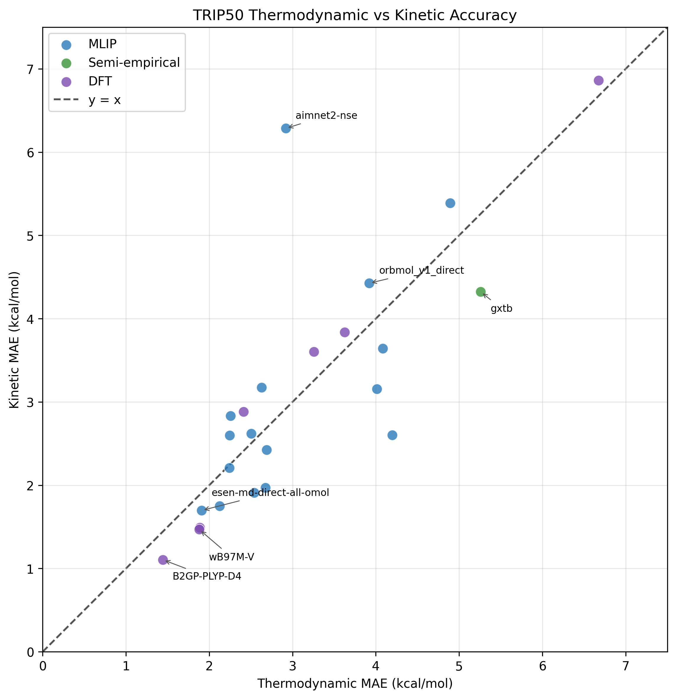
Compare each method's predicted reaction energies with the corresponding reference values. Kinetic plots distinguish forward and reverse barriers.
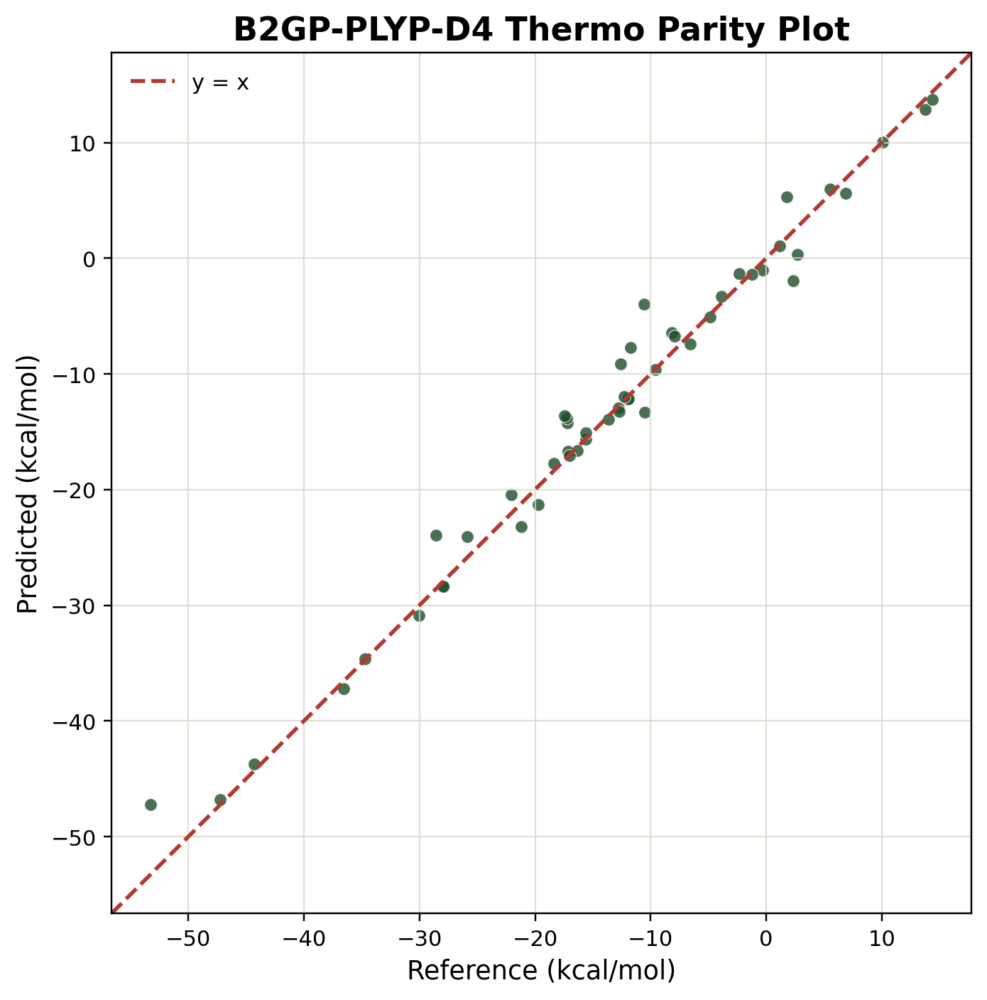
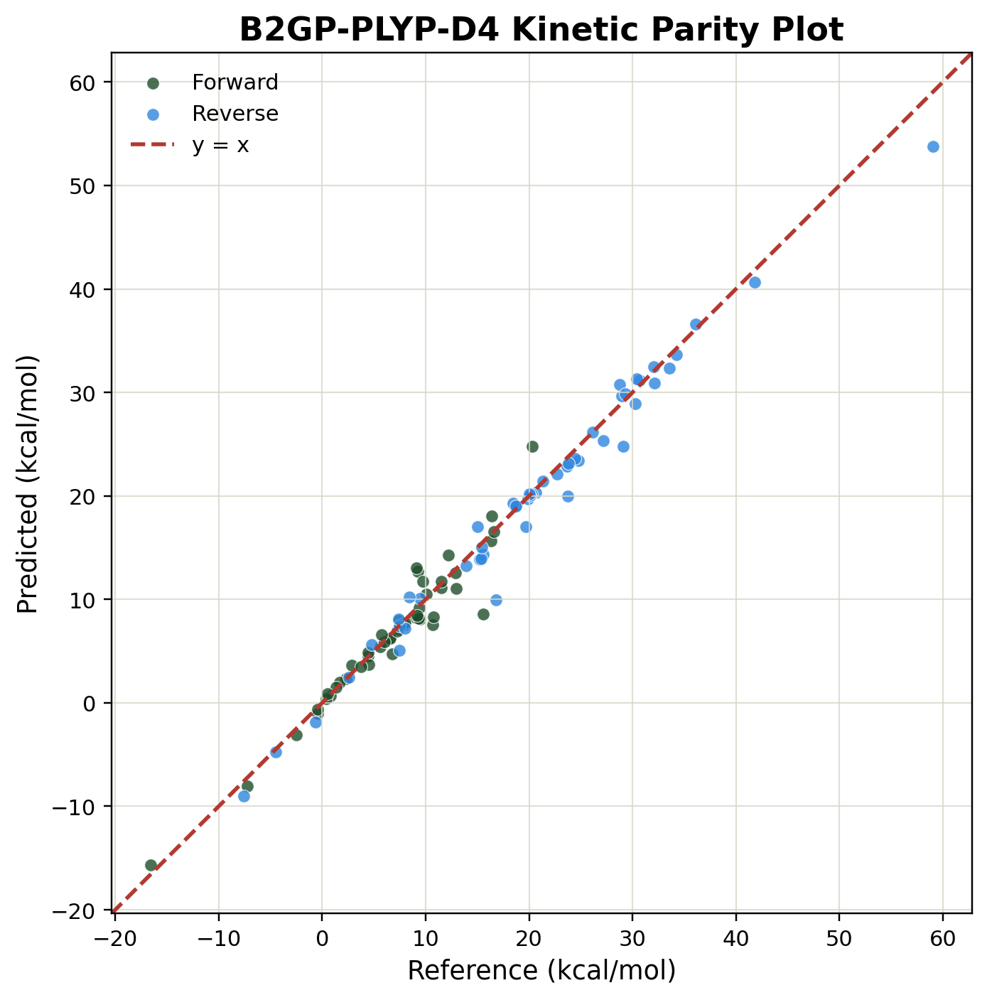
Use the tables to compare each model within the seven reaction categories.
Loading reaction-category data…
| Model | Category | Overall | C–C | C–O | C–S | HAT | Si–X | C–Hal | N–X |
|---|
| Model | Category | Overall | C–C | C–O | C–S | HAT | Si–X | C–Hal | N–X |
|---|
Overall MAEs and average model runtime for each reaction class.
| Reaction type | Thermo MAE | Kinetic MAE | Average time (s) |
|---|
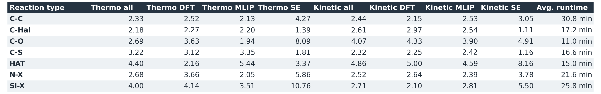
Compare relative energies for representative methods and one reaction from each category. Every diagram is normalized to the reactants.
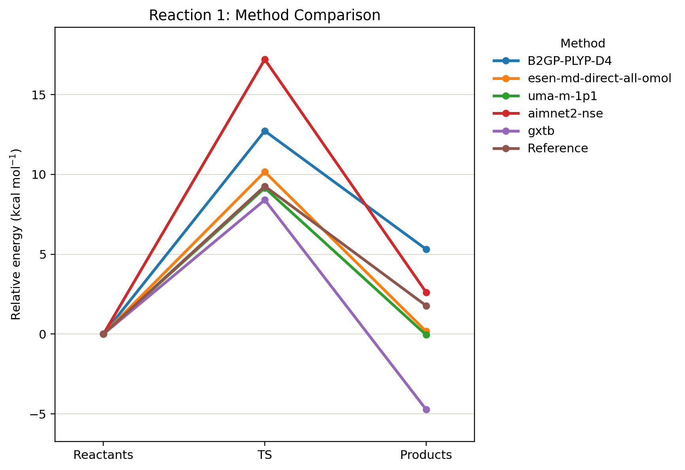

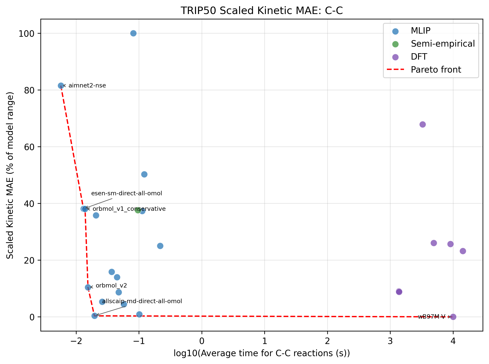
Select a model to compare its thermodynamic and kinetic MAEs across the seven reaction categories. Smaller values indicate greater accuracy.
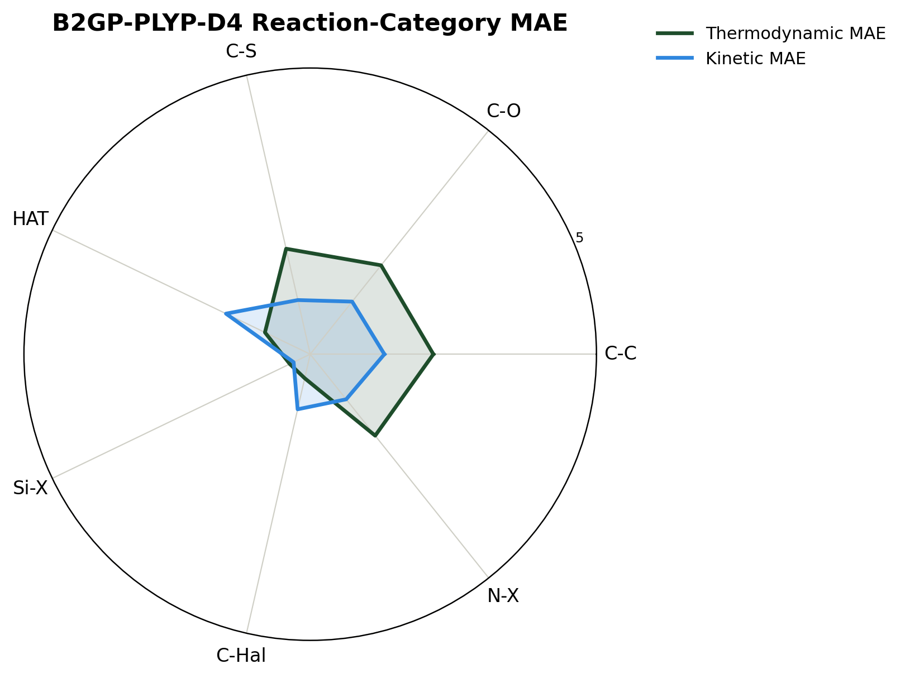
Distance from the origin is MAE in kcal/mol. These plots compare the average category behavior of DFT, MLIP, and semiempirical models using the current final data.
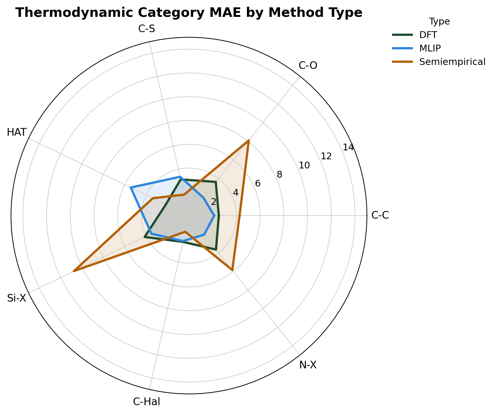
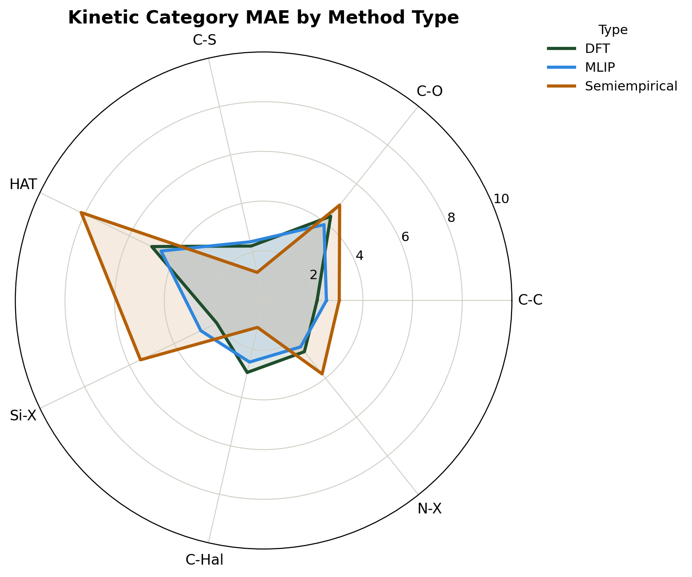
Select two models and whether to display thermodynamic error, kinetic error, or both. Lower values are closer to the center and indicate lower MAE.
Our three most accurate models were DFT models: B2GP-PLYP-D4, ωB97M-V, and M06-2X-D3(0). However, the best-performing MLIP had a combined MAE only about 0.53 kcal/mol greater than the best-performing DFT model, while having a computational cost roughly 4 to 5 orders of magnitude lower.
Overall, MLIPs can be very effective in predicting thermodynamic and kinetic properties of reactions involving triplet-state species. When selecting a model to use on a triplet-state reaction, it is important to consider the desired accuracy, the type of reaction, and the computation speed desired. For very low computational cost, eSEN-MD-direct-all-OMOL has the highest accuracy out of all of the non-DFT methods tested. Additionally, it has one of the lowest computational costs, being only 2.27 times slower than the second-fastest model and 5.29 times slower than the fastest model, both of which were more than 2 kcal/mol less accurate. The semi-empirical method g-xTB performed worse than nearly all of the MLIPs, for a similar or higher computational cost.
Within the MLIP groups, the only models that could produce usable results were the molecular models trained on datasets including open-shell species that accept spin or multiplicity as an input parameter. Spin-unaware models were excluded as they do not factor spin into energy predictions and therefore did not produce values representative of the reactions. Materials models were also excluded as they are trained on properties of crystal lattices and solid-state species that are not directly applicable to the small-molecule reactions being studied.
| Type | Family | Models | Software | Reference |
|---|---|---|---|---|
| DFT | Double hybrid | B2GP-PLYP-D4 | ORCA | [16] |
| DFT | Hybrid meta-GGA | M06-D4; M06-2X-D3(0) | ORCA | [17] |
| DFT | Meta-GGA | B97M-V | ORCA | [18] |
| DFT | Range-separated hybrid | ωB97M-V | ORCA | [3] |
| DFT | Hybrid GGA | B3PW91-D4 | ORCA | [19] |
| DFT | GGA | OLYP-D3BJ | ORCA | [20][21][22] |
| Semiempirical | Extended tight binding | g-xTB | g-xTB | [23] |
| MLIP | AllScAIP | MD conserving; MD direct | ASE/FairChem | [24] |
| MLIP | eSEN | MD direct; SM conserving; SM direct | ASE/FairChem | [25] |
| MLIP | MACE | MACE-OMOL | ASE/MACE | [26] |
| MLIP | ORB | ORBmol v1 conservative; v1 direct; v2 | ASE/ORB | [27] |
| MLIP | UMA | s-1p1; s-1p2; m-1p1 | ASE/FairChem | [28] |
| MLIP | AIMNet2 | AIMNet2-NSE | ASE/AIMNet2 | [29][30] |
| MLIP | MACE-POLAR-1 | POLAR-1-s; POLAR-1-m; POLAR-1-l | ASE/MACE | [31] |